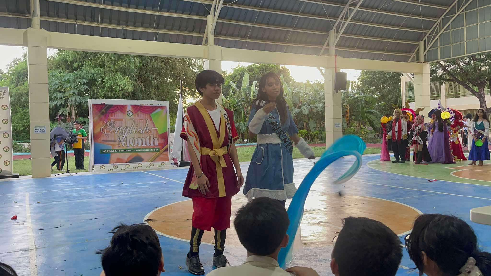

Listen to some tunes!
Re-Arrange, by Biffy Clyro
1ST QUARTER E-PORT
|
SCIENCE FASHION SHOW
|
VOLLEYBALL PRACTICE
|
||
|
EXTEMP SPEECH COMP
|
BOOKLANDIA COSTUME
|
||
|  |
BOOKLANDIA COMPETITION
|
HISTORICAL ICON
|
|
|
ALL ICONS
|
AWARD
|
This quarter taught me many more ways, tips, and alternatives to code. I appreciate the ICT subject because despite it being confusing most of the time, the rush of excitement and nervousness when unsure if you'll be able to finish your webpage truly is exhilarating. Learning how to code inspires me to further polish my skills and maybe even pursue a job in the future that requires a lot of coding. I enjoyed learning the lessons and am excited to study even more. One thing I'd like to change is my approach to learning each lesson. I'll put in more time into practicing hands-on learning, because there have been many incidents in which I was unable to finish my output in time, due to my lack of knowledge in the lesson.